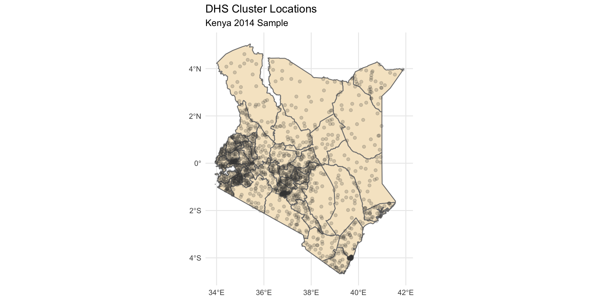

Multilevel Modeling and Climate Data Analysis Workshop
Using R to add context to population health research
 Finn Roberts - IPUMS Senior Data Analyst
Finn Roberts - IPUMS Senior Data Analyst
Kathryn Grace - UMN Department of Geography
Background
DHS + IPUMS DHS
- The Demographic and Health Surveys Program (DHS) is a leading source of population health data in many low- and middle- income countries
- IPUMS DHS standardizes and disseminates DHS survey data across time and space
Our Main Question
- What about people’s environmental context?
- How do we understand how climate and environmental conditions are related to population health?


Using IPUMS DHS with Climate Data
Pre-made environmental contextual variables?
Not very flexible…
You can’t redefine environmental exposure in the way most appropriate for your research
Using IPUMS DHS with Climate Data
DHS distributes GPS coordinates for the areas that are surveyed
We can obtain data from external climate sources
Then attach to the DHS survey results using these coordinates
A Motivating Example
Does extreme heat impact child birth weight outcomes?
DHS survey data: Kenya 2014 sample
Climate data: CHIRTS
Outline
- R Setup
- Introduction to DHS survey data
- Work with DHS GPS coordinates
- Visualize spatial data
- Work with CHIRTS temperature data
- Aggregate spatial data
- Link climate data and DHS surveys
- Build a multilevel model to assess climate impacts
1. Setup
Setup
- Comprehensive instructions can be found in the workshop README
Setup includes:
Registering for DHS / IPUMS DHS
Creating an IPUMS DHS data extract
Installing R + RStudio
Downloading workshop files and launching the workshop R project
Installing necessary R packages
Let’s get set up
2. R Basics
What is R?
- Statistical programming language
- Open-source and completely free
- Commonly used in social sciences, statistics, environmental sciences, and more

Why R?
You might already use other statistical software (SPSS, SAS, Excel, etc.)
Why use R?
- Reproducibility + automation
- Advanced statistics
- Visualization
- Spatial data
- Advanced documentation (websites, presentations, and more)

RStudio
- Integrated Development Environment (IDE) dedicated to R
- A sandbox for you to easily write, edit, and run R code

R Demo
Introduction to R + RStudio 💻
Load R Packages
Everyone should now have the necessary packages installed.
We can load them by running the following code in the R Console:
Questions?
3. Tabular DHS Data
Loading DHS tabular data
Recall that we downloaded two files for our IPUMS DHS extract
- The
.xmlfile contains metadata about the file contents - The
.dat.gzfile contains the actual data
- The
- ipumsr makes it easy to load IPUMS data using these files

Loading DHS tabular data
Loading DHS tabular data
Loading DHS tabular data
# Load the metadata file
ke_ddi <- read_ipums_ddi("data/idhs_00023.xml")
# Use metadata to load the data correctly
ke_dhs <- read_ipums_micro(ke_ddi)
ke_dhs
#> # A tibble: 20,964 × 53
#> SAMPLE SAMPLESTR COUNTRY YEAR IDHSPID IDHSHID DHSID IDHSPSU
#> <int+lbl> <chr+lbl> <int+lbl> <int> <chr> <chr> <chr> <dbl>
#> 1 40406 [Kenya 2014] 40406 [Keny… 404 [Ken… 2014 40406 … 40406 … KE20… 4.04e10
#> 2 40406 [Kenya 2014] 40406 [Keny… 404 [Ken… 2014 40406 … 40406 … KE20… 4.04e10
#> 3 40406 [Kenya 2014] 40406 [Keny… 404 [Ken… 2014 40406 … 40406 … KE20… 4.04e10
#> 4 40406 [Kenya 2014] 40406 [Keny… 404 [Ken… 2014 40406 … 40406 … KE20… 4.04e10
#> 5 40406 [Kenya 2014] 40406 [Keny… 404 [Ken… 2014 40406 … 40406 … KE20… 4.04e10
#> 6 40406 [Kenya 2014] 40406 [Keny… 404 [Ken… 2014 40406 … 40406 … KE20… 4.04e10
#> 7 40406 [Kenya 2014] 40406 [Keny… 404 [Ken… 2014 40406 … 40406 … KE20… 4.04e10
#> 8 40406 [Kenya 2014] 40406 [Keny… 404 [Ken… 2014 40406 … 40406 … KE20… 4.04e10
#> 9 40406 [Kenya 2014] 40406 [Keny… 404 [Ken… 2014 40406 … 40406 … KE20… 4.04e10
#> 10 40406 [Kenya 2014] 40406 [Keny… 404 [Ken… 2014 40406 … 40406 … KE20… 4.04e10
#> # ℹ 20,954 more rows
#> # ℹ 45 more variables: IDHSSTRATA <dbl>, CASEID <chr>, HHID <chr>, PSU <dbl>,
#> # STRATA <dbl>, DOMAIN <dbl>, HHNUM <dbl>, CLUSTERNO <dbl>, LINENO <int>,
#> # BIDX <int>, PERWEIGHT <dbl>, KIDWT <dbl>, AWFACTT <dbl>, AWFACTU <dbl>,
#> # AWFACTR <dbl>, AWFACTE <dbl>, AWFACTW <dbl>, DVWEIGHT <dbl>,
#> # URBAN <int+lbl>, GEO_KE1989_2014 <int+lbl>, GEO_KE2014 <int+lbl>,
#> # GEOALT_KE2014 <int+lbl>, AGE <int>, AGE5YEAR <int+lbl>, …Exploring our DHS data
- View table column names with
colnames()
colnames(ke_dhs)
#> [1] "SAMPLE" "SAMPLESTR" "COUNTRY" "YEAR"
#> [5] "IDHSPID" "IDHSHID" "DHSID" "IDHSPSU"
#> [9] "IDHSSTRATA" "CASEID" "HHID" "PSU"
#> [13] "STRATA" "DOMAIN" "HHNUM" "CLUSTERNO"
#> [17] "LINENO" "BIDX" "PERWEIGHT" "KIDWT"
#> [21] "AWFACTT" "AWFACTU" "AWFACTR" "AWFACTE"
#> [25] "AWFACTW" "DVWEIGHT" "URBAN" "GEO_KE1989_2014"
#> [29] "GEO_KE2014" "GEOALT_KE2014" "AGE" "AGE5YEAR"
#> [33] "RESIDENT" "RELIGION" "MARSTAT" "CHEB"
#> [37] "FLOOR" "TOILETTYPE" "DRINKWTR" "CURRWORK"
#> [41] "WEALTHQ" "WEALTHS" "EDUCLVL" "EDYRTOTAL"
#> [45] "HEIGHTFEM" "KIDSEX" "KIDDOBCMC" "LINENOKID"
#> [49] "HWHAZWHO" "BIRTHWT" "BIRTHWTREF" "FEVRECENT"
#> [53] "DIARRECENT"Exploring our DHS data
- Index individual rows and columns with
[<rows>, <cols>]
Exploring our DHS data
- Index individual rows and columns with
[<rows>, <cols>]
Exploring our DHS data
- Index individual rows and columns with
[<rows>, <cols>]
Exploring our DHS data
- Index individual rows and columns with
[<rows>, <cols>]
Exploring our DHS data
- Use
$to access individual columns
ke_dhs$RELIGION
#> <labelled<integer>[20964]>: Religion
#> [1] 2300 2300 2300 2300 2300 2300 2300 2300 2300 2300 2300 2300 2300 2300
#> [15] 2300 2300 2300 2300 2300 2300 2300 2300 2300 2300 2300 2300 2300 2300
#> [29] 2300 2100 2100 2300 2300 2300 2300 2300 2300 2300 2100 2300 2300 2300
#> [43] 2100 2300 2300 2100 2100 2300 2300 2300 2300 2300 2300 2100 2300 2300
#> [57] 2100 2100 2100 2300 2100 2100 2100 9000 2300 2300 2300 2100 2300 2300
#> [71] 2300 2300 2300 2300 2300 2300 2300 2300 2300 2100 2300 2300 2300 2300
#> [85] 2300 1000 1000 1000 1000 1000 1000 1000 1000 1000 1000 1000 2300 1000
#> [99] 2100 2300 2300 2300 2300 2100 2100 2100 2300 2100 2100 2300 2300 2300
#> [113] 2100 2100 2300 2100 2300 2300 2300 2300 2300 2300 2300 2300 2100 2300
....Exploring DHS metadata
- The IPUMS DHS metadata allows us to see additional details about each column
Exploring DHS metadata
- The IPUMS DHS metadata allows us to see additional details about each column
# Display variable information for all variables in our file
ipums_var_info(ke_dhs)
#> # A tibble: 53 × 4
#> var_name var_label var_desc val_labels
#> <chr> <chr> <chr> <list>
#> 1 SAMPLE IPUMS-DHS sample identifier "SAMPLE… <tibble>
#> 2 SAMPLESTR IPUMS-DHS sample identifier (string) "SAMPLE… <tibble>
#> 3 COUNTRY Country "COUNTR… <tibble>
#> 4 YEAR Year of sample "YEAR r… <tibble>
#> 5 IDHSPID Unique cross-sample respondent identifier "IDHSPI… <tibble>
#> 6 IDHSHID Unique cross-sample household identifier "IDHSHI… <tibble>
#> 7 DHSID Key to link DHS clusters to context data (str… "DHSID … <tibble>
....Exploring DHS metadata
- This metadata can be useful for determining whether our variables need to be cleaned before analysis
ipums_var_desc(ke_dhs$BIRTHWT)
#> [1] "For children born in the three to five years before the survey,
#> BIRTHWT (M19) reports the child's birthweight in kilos with three implied
#> decimal places (or, alternatively stated, in grams with no decimal places).
#> Children who were not weighed are coded 9996."- In this case, we will need to adjust the decimal places and remove missing values (later!)
Exploring DHS metadata
Some variables have labeled values
- Categorical data
Exploring DHS metadata
Some variables have labeled values
- Missing values
R Demo
Exploring tabular data 🔍
Cleaning DHS Data
As we mentioned, some variables need to be prepraed (“cleaned”) before analysis
For instance, missing
BIRTHWTvalues are coded as large numbers
Cleaning DHS Data
The dplyr package is designed for tabular data manipulation
mutate()allows you to modify columns.We can recode these large numbers as missing values (
NA)

Cleaning DHS data
- We can do the same with several similar variables:
Cleaning DHS data
Some variables need to be recoded into simpler categories
For
EDUCLVL, we may want to combine the “Secondary†and “Higher†groups:
Cleaning DHS data
case_when()can be useful hereYou can specify multiple conditions and replacement values:
Cleaning DHS data
case_when()can be useful hereYou can specify multiple conditions and replacement values:
case_when(
ke_dhs$EDUCLVL == 8 ~ NA,
ke_dhs$EDUCLVL >= 2 ~ "Secondary+",
ke_dhs$EDUCLVL == 1 ~ "Primary",
TRUE ~ "None"
)
#> [1] "Secondary+" "Secondary+" "Secondary+" "Secondary+" "Primary"
#> [6] "Primary" "Primary" "Secondary+" "Secondary+" "Secondary+"
#> [11] "Secondary+" "Secondary+" "Secondary+" "Primary" "Primary"
#> [16] "Secondary+" "Secondary+" "Secondary+" "Secondary+" "Primary"
#> [21] "Primary" "Primary" "Primary" "Secondary+" "Secondary+"
....Cleaning DHS data
- Fortunately, when we use dplyr, we don’t have to indicate the name of the dataset each time:
Cleaning DHS data
Now we just have to do a similar process for the rest of our input variables!
We will save this as an exercise
Defining our sample
- We can also use
mutate()to create new columns - In this case, to make an ID for each child in our sample:
# str_squish() removes excess whitespace in the ID strings
ke_dhs <- ke_dhs |>
mutate(KIDID = stringr::str_squish(paste(IDHSPID, BIDX)))
ke_dhs$KIDID
#> [1] "40406 0001019 02 1" "40406 0001019 03 1" "40406 0001033 02 1"
#> [4] "40406 0001033 02 2" "40406 0001037 02 1" "40406 0001037 02 2"
#> [7] "40406 0001041 02 1" "40406 0001059 02 1" "40406 0001059 02 2"
#> [10] "40406 0001059 02 3" "40406 0001063 02 1" "40406 0001072 02 1"
#> [13] "40406 0001099 02 1" "40406 0002006 01 1" "40406 0002006 02 1"
....
Defining our sample
We may need to exclude certain records from our analysis
For instance:
- Missing data
- Unreliable data
- Records belong to populations that are not being considered
Defining our sample
This last point is particularly important when considering climate exposure
People who do not consistently live in an area will not have been exposed to the climate data for that area!
Many DHS surveys include an indication of residency status
- In IPUMS DHS:
RESIDEINTYR - In DHS:
V104
- In IPUMS DHS:
Defining our sample
Unfortunately, Kenya 2014 sample only includes a more general variable:
RESIDENTWe will remove all records that aren’t residents of the cluster where they were surveyed
We can use
filter()from dplyr to keep only records for “usual residents”
Defining our sample
Missing values are a common reason to remove data
Again, we can use
filter()withis.na()to remove missing values
Visualizing our sample
- It can also be useful to visualize variables to identify unreliable data
- We will use
ggplot2()to create plots that are linked to our data
ggplot2()could be the source of an entire workshop by itself.- If we have time, we can cover it during our demos
- But it will not be our main focus today

Visualizing our sample
Make a ggplot based on your data with
ggplot()Add different visual layers (
geom_) with+For instance, here is a histogram of our
BIRTHWTvalues:
Visualizing our sample
It looks like lots of
BIRTHWTvalues cluster at certain pointsWe should investigate to determine whether these values are reliable
For this workshop, we are not going to worry about this, though!
Data types
- We often need to recode variables to the correct data types
- Sometimes categorical variables are treated as numeric variables, but we want them to be factors
- A factor is the way R stores categorical data
ke_dhs <- as_factor(ke_dhs) # Convert all remaining labeled columns to factor
ke_dhs$RESIDENT
#> [1] Usual resident Usual resident Usual resident Usual resident
#> [5] Usual resident Usual resident Usual resident Usual resident
#> [9] Usual resident Usual resident Usual resident Usual resident
#> [13] Usual resident Usual resident Usual resident Usual resident
#> [17] Usual resident Usual resident Usual resident Usual resident
#> [21] Usual resident Usual resident Usual resident Usual resident
#> [25] Usual resident Usual resident Usual resident Usual resident
....R Demo
Cleaning tabular data 🧼
Questions?
4. DHS GPS Data
About GPS data
- Location information is collected for the household groups (“clusters”) that were sampled in a survey
- GPS locations represent the centroid of the sampled cluster
- GPS locations are further displaced to protect privacy
Access to GPS data
Typically you must request special access via the DHS program to obtain GPS coordinate data
For this workshop, we have generated fake GPS coordinate data!
These data look like what you would get from the DHS Program, but the coordinates have been randomly generated.
Disclaimer
As our coordinates do not reflect real observations, all analyses are for demonstration only!
Loading GPS data in R
- We will use the sf package (for simple features)
- This allows us to represent spatial data in a familiar tabular format
- If you are familiar with GIS software, you will find that you can do many of the same operations using sf and R

Loading GPS data in R
- Load a spatial file with
st_read()
Loading GPS data in R
- Load a spatial file with
st_read()
# Reminder: these are fake coordinates!
ke_gps <- st_read("data/ke_gps.shp", quiet = TRUE)
ke_gps
#> Simple feature collection with 1594 features and 20 fields
#> Geometry type: POINT
#> Dimension: XY
#> Bounding box: xmin: 33.98758 ymin: -4.586276 xmax: 41.87459 ymax: 4.611987
#> Geodetic CRS: WGS 84
#> First 10 features:
#> DHSID DHSCC DHSYEAR DHSCLUST CCFIPS ADM1FIPS ADM1FIPSNA ADM1SALBNA
#> 1 KE201400000001 KE 2014 1 KE NULL NULL NULL
#> 2 KE201400000002 KE 2014 2 KE NULL NULL NULL
#> 3 KE201400000003 KE 2014 3 KE NULL NULL NULL
#> 4 KE201400000004 KE 2014 4 KE NULL NULL NULL
#> 5 KE201400000005 KE 2014 5 KE NULL NULL NULL
#> 6 KE201400000006 KE 2014 6 KE NULL NULL NULL
#> 7 KE201400000007 KE 2014 7 KE NULL NULL NULL
#> 8 KE201400000008 KE 2014 8 KE NULL NULL NULL
#> 9 KE201400000009 KE 2014 9 KE NULL NULL NULL
#> 10 KE201400000010 KE 2014 10 KE NULL NULL NULL
#> ADM1SALBCO ADM1DHS ADM1NAME DHSREGCO DHSREGNA SOURCE URBAN_RURA LATNUM
#> 1 NULL 90 Nairobi 9 Nairobi CEN U -1.282723
#> 2 NULL 90 Nairobi 9 Nairobi CEN U -1.278781
#> 3 NULL 90 Nairobi 9 Nairobi CEN U -1.279646
#> 4 NULL 90 Nairobi 9 Nairobi CEN U -1.280380
#> 5 NULL 90 Nairobi 9 Nairobi CEN U -1.272064
#> 6 NULL 90 Nairobi 9 Nairobi CEN U -1.263006
#> 7 NULL 90 Nairobi 9 Nairobi CEN U -1.341546
#> 8 NULL 90 Nairobi 9 Nairobi CEN U -1.312427
#> 9 NULL 90 Nairobi 9 Nairobi CEN U -1.318072
#> 10 NULL 90 Nairobi 9 Nairobi CEN U -1.315103
#> LONGNUM ALT_GPS ALT_DEM DATUM geometry
#> 1 36.75296 9999 1801 WGS84 POINT (35.71713 0.140332)
#> 2 36.75844 9999 1801 WGS84 POINT (35.76638 0.6270388)
#> 3 36.74593 9999 1808 WGS84 POINT (36.11351 0.4334558)
#> 4 36.69709 9999 1894 WGS84 POINT (35.87447 0.4794212)
#> 5 36.74313 9999 1816 WGS84 POINT (36.32321 0.1759624)
#> 6 36.71059 9999 1920 WGS84 POINT (35.61286 0.5304094)
#> 7 36.69719 9999 1887 WGS84 POINT (35.98676 1.239719)
#> 8 36.78541 9999 1702 WGS84 POINT (36.05537 0.538201)
#> 9 36.78468 9999 1710 WGS84 POINT (36.10384 1.115597)
#> 10 36.80952 9999 1700 WGS84 POINT (36.07837 0.2047607)Simple features
- Note that sf is used only for vector data. That is, data composed of discrete features, like points, lines, and polygons

- Cluster locations are represented by
POINTgeometries
R demo
Working with vector data 📍
Questions?
Mapping
We will use the ggspatial package to produce static maps for this workshop
ggspatial is designed to be used with the popular ggplot2 package
Mapping
Mapping

Mapping
We’ll obtain some borders to add some context.
These are from the 2014 DHS survey
Mapping
Mapping
Mapping
Modifying map style
- We can modify the aesthetics of the map as well as the content
ggplot() +
layer_spatial(
ke_borders,
fill = "#F6E6CB", # Polygon fill color
color = "#7f7f7f", # Polygon outline color
linewidth = 0.5 # Polygon line width
) +
layer_spatial(
ke_gps,
alpha = 0.2, # Cluster point transparency
color = "#444444" # Cluster point color
) +
labs(title = "DHS Cluster Locations", subtitle = "Kenya 2014 Sample")Modifying map style
- We can modify the aesthetics of the map as well as the content
R Demo
Mapping with ggspatial 🗺️
Questions?
5. Climate Data
Data sources
- We are focusing on extreme heat
- We will use CHIRTS data
- CHIRTS is provided by the Climate Hazards Center (CHC)
What is CHIRTS?
CHIRTS provides daily estimates for several temperature metrics at a 0.05° (~5 kilometer) resolution
Data for 1983-2016
Multiple temperature metrics to choose from (max, min, relative humidity, etc.)
For this demonstration, we will use daily maximum air temperature (Tmax)
What is CHIRTS?
Like many climate data sources, CHIRTS is a raster data source
Compared to vector data, raster data represent geographic features in a grid, where each cell in the grid is associated with a particular value.

Obtaining CHIRTS data
Option 1: Direct download
Can download yearly data for Africa at different resolutions
Obtaining CHIRTS data
Option 2: The
chirpspackage in RCan provide parameters indicating the desired data right in your R console!
Obtaining CHIRTS data
We have already prepared and saved some CHIRTS data, since it can take time/space to download and store raster data
File
ke_chirts_2013.ncin thedatadirectory of the workshop materials
Raster data
- Think “image†files. Like a camera: a rectangular set of pixels at a certain resolution

Raster data in R
- sf does not handle raster data
- Instead, we will use terra
- Unlike vector data, raster data is not easily handled in a tabular format
- terra uses its own set of R data structures to represent raster data

Raster data in R
How does terra represent rasters?
Load a raster with
rast()
Raster data in R
How does terra represent rasters?
Load a raster with
rast()
ke_chirts <- rast("data/ke_chirts_2013.nc") # Our pre-saved CHIRTS NetCDF
ke_chirts
#> class : SpatRaster
#> dimensions : 195, 160, 365 (nrow, ncol, nlyr)
#> resolution : 0.05, 0.05 (x, y)
#> extent : 33.9, 41.9, -4.700001, 5.049999 (xmin, xmax, ymin, ymax)
#> coord. ref. : lon/lat WGS 84 (EPSG:4326)
#> source : ke_chirts_2013.nc
#> names : ke_ch~013_1, ke_ch~013_2, ke_ch~013_3, ke_ch~013_4, ke_ch~013_5, ke_ch~013_6, ...
#> time (days) : 2013-01-01 to 2013-12-31Raster data in R
- Rasters can be composed of multiple layers (a raster stack)
- Often, each layer represents a single day of data

Raster data in R
- Access specific layers with
[[
Raster data in R
- Access specific layers with
[[
ke_chirts[[1]]
#> class : SpatRaster
#> dimensions : 195, 160, 1 (nrow, ncol, nlyr)
#> resolution : 0.05, 0.05 (x, y)
#> extent : 33.9, 41.9, -4.700001, 5.049999 (xmin, xmax, ymin, ymax)
#> coord. ref. : lon/lat WGS 84 (EPSG:4326)
#> source : ke_chirts_2013.nc
#> name : ke_chirts_2013_1
#> time (days) : 2013-01-01Raster data in R
- You can access a variety of details about the raster using terra
Raster data in R
- You can access a variety of details about the raster using terra
# Get raster cell values (in this case, max temperature for that cell)
values(ke_chirts)
#> ke_chirts_2013_1 ke_chirts_2013_2 ke_chirts_2013_3 ke_chirts_2013_4
#> [1,] 35.72812 37.59384 36.69135 38.39887
#> [2,] 35.47859 37.44995 36.54235 38.20750
#> [3,] 35.54073 37.58125 36.67059 38.30996
#> [4,] 35.51815 37.61068 36.69458 38.32338
....Raster data in R
- You can access a variety of details about the raster using terra
Raster data in R
- You can access a variety of details about the raster using terra
Raster data in R
- You can access a variety of details about the raster using terra
Raster data in R
- You can access a variety of details about the raster using terra
# Date that corresponds to each layer
time(ke_chirts)
#> [1] "2013-01-01" "2013-01-02" "2013-01-03" "2013-01-04" "2013-01-05"
#> [6] "2013-01-06" "2013-01-07" "2013-01-08" "2013-01-09" "2013-01-10"
#> [11] "2013-01-11" "2013-01-12" "2013-01-13" "2013-01-14" "2013-01-15"
#> [16] "2013-01-16" "2013-01-17" "2013-01-18" "2013-01-19" "2013-01-20"
#> [21] "2013-01-21" "2013-01-22" "2013-01-23" "2013-01-24" "2013-01-25"
....time()will be useful later!
Mapping with raster data
- ggspatial works with raster data as well!
Mapping with raster data
- ggspatial works with raster data as well!
Mapping with raster data
- ggspatial works with raster data as well!
R Demo
Working with raster data ðŸŒ
Questions?
6. Working with Space and Time
Thinking spatially
Spatial data sounds flashy, but we typically have to simplify it before it can be useful
We have detailed daily maximum temperature for an entire country
But our DHS survey records are recorded at particular locations
How do we convert our climate data into a form that can be used with DHS surveys?
Thinking spatially
Adding spatial data to our analyses requires two streams of thought:
- Conceptual framework
- How does temperature impact health? Through which pathways?
- Technical processing
- We need to convert our data sources into a format that reflects the identified pathways
Brainstorm
6.1 Transforming Vector Data
Buffering
Recall our GPS clusters are represented as points
Climate effects rarely happen only at a single point!
The climate of the general area around a cluster might provide a better representation of how it impacts the population in an area
Buffering
We can capture this by creating a spatial buffer, or a area around each cluster point
However, we first need to deal with another technical detail
Projecting
- Our data are currently in latitude/longitude format:
ke_gps[, "geometry"]
#> Simple feature collection with 1594 features and 0 fields
#> Geometry type: POINT
#> Dimension: XY
#> Bounding box: xmin: 33.98758 ymin: -4.586276 xmax: 41.87459 ymax: 4.611987
#> Geodetic CRS: WGS 84
#> First 10 features:
#> geometry
#> 1 POINT (35.71713 0.140332)
#> 2 POINT (35.76638 0.6270388)
#> 3 POINT (36.11351 0.4334558)
....Projecting
- Number of meters in a degree varies across the globe
- Especially for longitude
- This means our buffer zone size would vary by the location of each cluster!
Projecting
We need to first transform our coordinate system so that our units are in meters
We need to project our spherical coordinates onto a flat surface

Selecting a Projection
- Projections inherently distort the spherical earth
- However, different projections preserve different attributes of space
- Distance
- Area
- Shapes
- A compromise
Selecting a Projection
- There are also projection options designed to minimize distortion in specific areas
- One option: Universal Transverse Mercator (UTM)
- UTM has different zones for different areas on the globe
Selecting a Projection
- Zone 37 provides the best projection (least distortion) for Kenya
- Kenya is split along the border between 37N and 37S
- For simplicity we will use 37N
- UTM 37N corresponds to EPSG 32637
Projection in R
- Use sf’s
st_transform()to project
Projection in R
- Use sf’s
st_transform()to project
ke_gps <- st_transform(ke_gps, crs = 32637)
ke_gps[, "geometry"]
#> Simple feature collection with 1594 features and 0 fields
#> Geometry type: POINT
#> Dimension: XY
#> Bounding box: xmin: -58474.75 ymin: -506942.7 xmax: 819246.2 ymax: 510915
#> Projected CRS: WGS 84 / UTM zone 37N
#> First 10 features:
#> geometry
#> 1 POINT (134498.7 15536.57)
#> 2 POINT (140008.4 69417.92)
#> 3 POINT (178677.7 47971.17)
....Projection in R
- We can still plot just as before
Projection in R
- The map looks pretty much the same!
- If we were to use a less appropriate projection, the difference would be more obvious (see exercises)
Creating Buffers
- Now that our data are in meters, we can buffer
- We will use a 10km buffer in this case
- In the real world, this decision should be based on your research question or the geography of interest!
Creating Buffers
- Now that our data are in meters, we can buffer
- We will use a 10km buffer in this case
- In the real world, this decision should be based on your research question or the geography of interest!
ke_buffer <- st_buffer(ke_gps, dist = 10000)
ke_buffer[, "geometry"]
#> Simple feature collection with 1594 features and 0 fields
#> Geometry type: POLYGON
#> Dimension: XY
#> Bounding box: xmin: -68474.75 ymin: -516942.7 xmax: 829246.2 ymax: 520915
#> Projected CRS: WGS 84 / UTM zone 37N
#> First 10 features:
#> geometry
#> 1 POLYGON ((144498.7 15536.57...
#> 2 POLYGON ((150008.4 69417.92...
#> 3 POLYGON ((188677.7 47971.17...
....Creating Buffers

Transform Back
R Demo
Vector aggregation ðŸŒ
Questions?
6.2 Transforming Raster Data
Temporal aggregation
- Our CHIRTS data form a daily time series
- But the children in our DHS survey were born at specific points in time
- We need to include temperature data from the relevant time period for each child
Temporal aggregation
- How to simplify our CHIRTS data into temperature exposure summaries for each child?
Considerations:
- What temporal level do we want to summarize to?
- Days? Months? A single summary value?
- How to summarize daily data?
- Average temperature?
- Number of days above a given temperature?
- Sequential days above a given temperature (“heatwave”)?
Temporal aggregation in R
- Use terra!
- If aggregating the entire time series, use a single summary function:
Temporal aggregation in R
- Use terra!
- If aggregating the entire time series, use a single summary function:
ke_chirts_mean <- mean(ke_chirts)
ke_chirts_mean
#> class : SpatRaster
#> dimensions : 195, 160, 1 (nrow, ncol, nlyr)
#> resolution : 0.05, 0.05 (x, y)
#> extent : 33.9, 41.9, -4.700001, 5.049999 (xmin, xmax, ymin, ymax)
#> coord. ref. : lon/lat WGS 84 (EPSG:4326)
#> source(s) : memory
#> name : mean
#> min value : 10.84893
#> max value : 41.83465Temporal aggregation in R
- Note that this aggregates cells across layers (time), so we will still have data for our full spatial region
Temporal aggregation in R
- What about another way to aggregate? Days above a threshold temperature?
- We can do simple operations to all of our raster cells at once:
Temporal aggregation in R
- What about another way to aggregate? Days above a threshold temperature?
- We can do simple operations to all of our raster cells at once:
Temporal aggregation in R
- Now we can count the number of days above 35 degrees by summing:
Temporal aggregation in R
- Now we can count the number of days above 35 degrees by summing:
What level do we want to aggregate to?
- So far we have summarized the entire time series of CHIRTS data into one value
- But the children in our DHS survey were born at specific points in time
- A single summary value likely affects children differently based on when they were born
What level do we want to aggregate to?
- Instead we can aggregate to a lower level
- DHS collects birth date data at the monthly level, so this is the finest resolution we can use
What level do we want to aggregate to?
- Recall that our raster has a
timecomponent - We can use it to aggregate our raster data to the monthly level as well
- We will use terra’s
tapp()to do so

Selecting a metric
There are many other ways to quantify heat exposure
For simplicity of interpretation in our models (later), we’ll return to the average temperature metric
Spatial aggregation
- Now we have our raster aggregated temporally
- How do we identify the temperature values at our cluster locations?
Zooming in
Spatial aggregation
We can use terra’s
extract()Let’s experiment with the sample cluster from before
By default, it extracts the cell values within the cluster region:
Spatial aggregation
- Note that this includes only the 10 cells whose center lies within our cluster polygon.
- Use
weights = TRUEto get the weights for each cell based on intersection area:
Spatial aggregation
- We can summarize the values within the cluster region as well.
- If
weights = TRUE, the value will automatically be area-weighted
Scaling up
- We can easily apply the same operation to all of our cluster regions at once
Scaling up
- It will be useful to use the
DHSIDcluster ID instead of the index ID thatextract()produces.
Scaling up
- It will be useful to use the
DHSIDcluster ID instead of the index ID thatextract()produces.
# Update to use cluster IDs
ke_chirts_clust$ID <- ke_buffer$DHSID
ke_chirts_clust
#> ID ym_201301 ym_201302 ym_201303 ym_201304 ym_201305 ym_201306
#> 1 KE201400000001 25.50097 26.93703 26.74054 23.99621 24.73310 23.18324
#> 2 KE201400000002 27.44769 28.71789 28.42848 25.70832 26.39564 25.03732
#> 3 KE201400000003 31.52870 32.83890 32.51355 29.73158 30.76798 29.27555
#> 4 KE201400000004 30.59242 32.00248 31.70173 28.82798 29.88593 28.54942
....- Now each cluster ID is associated with 12 months of CHIRTS data!
R Demo
Raster aggregation ðŸŒ
Questions?
7. Linking climate exposure to survey data
7.1 Reconciling data source formatting
Wide vs. long format
extract()produces data in wide formatEach column corresponds to a month of temperature data for a given cluster
This is a common format in GIS software
ke_chirts_clust
#> ID ym_201301 ym_201302 ym_201303 ym_201304 ym_201305 ym_201306
#> 1 KE201400000001 25.50097 26.93703 26.74054 23.99621 24.73310 23.18324
#> 2 KE201400000002 27.44769 28.71789 28.42848 25.70832 26.39564 25.03732
#> 3 KE201400000003 31.52870 32.83890 32.51355 29.73158 30.76798 29.27555
#> 4 KE201400000004 30.59242 32.00248 31.70173 28.82798 29.88593 28.54942
....Wide vs. long format
However, tabular data is often handled in long format
Each row corresponds to a month of temperature data for a given cluster
Wide vs. long format
- We can convert our cluster data to long format with
pivot_longer()
Wide vs. long format
- We had 1594 clusters and 12 months of data per cluster, so we should end up with
1594 * 12 = 19128rows
ke_chirts_long <- ke_chirts_clust |>
pivot_longer(
cols = -ID, # Do not pivot the ID col
names_to = "CHIRTS_DATE", # Rename output columns
values_to = "MEAN_TEMP"
)
ke_chirts_long
#> # A tibble: 19,128 × 3
#> ID CHIRTS_DATE MEAN_TEMP
#> <chr> <chr> <dbl>
#> 1 KE201400000001 ym_201301 25.5
#> 2 KE201400000001 ym_201302 26.9
#> 3 KE201400000001 ym_201303 26.7
#> 4 KE201400000001 ym_201304 24.0
#> 5 KE201400000001 ym_201305 24.7
#> 6 KE201400000001 ym_201306 23.2
#> 7 KE201400000001 ym_201307 23.4
....Dates in DHS
- DHS uses century-month codes (CMCs) to represent dates
- CMC codes represent dates as the number of months that have elapsed since year 1900
ke_dhs$KIDDOBCMC
#> [1] 1364 1331 1356 1333 1348 1352 1321 1331 1351 1376 1333 1354 1318 1372
#> [15] 1333 1318 1367 1363 1359 1341 1318 1347 1371 1351 1320 1317 1337 1363
#> [29] 1330 1364 1373 1356 1335 1349 1320 1332 1330 1348 1366 1341 1346 1324
#> [43] 1334 1327 1334 1316 1321 1364 1366 1352 1354 1363 1369 1351 1351 1362
#> [57] 1331 1331 1345 1327 1344 1327 1340 1322 1344 1319 1315 1372 1363 1326
....Dates in CHIRTS
- However, our extracted monthly CHIRTS data is stored as a string:
ke_chirts_long$CHIRTS_DATE
#> [1] "ym_201301" "ym_201302" "ym_201303" "ym_201304" "ym_201305" "ym_201306"
#> [7] "ym_201307" "ym_201308" "ym_201309" "ym_201310" "ym_201311" "ym_201312"
#> [13] "ym_201301" "ym_201302" "ym_201303" "ym_201304" "ym_201305" "ym_201306"
#> [19] "ym_201307" "ym_201308" "ym_201309" "ym_201310" "ym_201311" "ym_201312"
#> [25] "ym_201301" "ym_201302" "ym_201303" "ym_201304" "ym_201305" "ym_201306"
....Converting Dates
- We’ll need to convert these to a single format before we can use the two data sources together
- Fortunately, the IPUMS DHS variable info describes how to convert between CMC codes
Converting Dates
- We can use the indicated formula to convert our CHIRTS dates into CMC format
- First, we need to convert the string format to year and month
- We will remove the
"ym_"prefix first:
Converting Dates
- We can use the indicated formula to convert our CHIRTS dates into CMC format
- First, we need to convert the string format to year and month
- We will remove the
"ym_"prefix first:
library(stringr)
# Replace "ym_" with ""
ke_chirts_long <- ke_chirts_long |>
mutate(CHIRTS_DATE = str_replace(CHIRTS_DATE, "ym_", ""))
ke_chirts_long
#> # A tibble: 19,128 × 3
#> ID CHIRTS_DATE MEAN_TEMP
#> <chr> <chr> <dbl>
#> 1 KE201400000001 201301 25.5
#> 2 KE201400000001 201302 26.9
#> 3 KE201400000001 201303 26.7
#> 4 KE201400000001 201304 24.0
....Converting Dates
- Convert the combined year-month format into a standard date
- We can use
ym()from the handy lubridate package
Converting Dates
- Convert the combined year-month format into a standard date
- We can use
ym()from the handy lubridate package
library(lubridate)
ke_chirts_long <- ke_chirts_long |>
mutate(CHIRTS_DATE = ym(CHIRTS_DATE))
ke_chirts_long
#> # A tibble: 19,128 × 3
#> ID CHIRTS_DATE MEAN_TEMP
#> <chr> <date> <dbl>
#> 1 KE201400000001 2013-01-01 25.5
#> 2 KE201400000001 2013-02-01 26.9
#> 3 KE201400000001 2013-03-01 26.7
#> 4 KE201400000001 2013-04-01 24.0
#> 5 KE201400000001 2013-05-01 24.7
....Converting Dates
Finally, we can convert these dates into CMC codes using the formula from before
(year - 1900) * 12 + month
Workflow note
- We can combine all the above steps into a single R expression
- I’m walking through step by step for clarity
- In a real analysis script, the following might be easier to write/interpret
7.2 Joining data sources
What we have at this point
Our DHS and CHIRTS data now have been reformatted so we can link records
Let’s peek at what we have:
# Cluster-level monthly CHIRTS data
ke_chirts_long
#> # A tibble: 19,128 × 3
#> ID CHIRTS_DATE MEAN_TEMP
#> <chr> <dbl> <dbl>
#> 1 KE201400000001 1357 25.5
#> 2 KE201400000001 1358 26.9
#> 3 KE201400000001 1359 26.7
#> 4 KE201400000001 1360 24.0
#> 5 KE201400000001 1361 24.7
#> 6 KE201400000001 1362 23.2
#> 7 KE201400000001 1363 23.4
#> 8 KE201400000001 1364 23.0
#> 9 KE201400000001 1365 24.5
#> 10 KE201400000001 1366 25.1
#> # ℹ 19,118 more rowsWhat we have at this point
Our DHS and CHIRTS data now have been reformatted so we can link records
Let’s peek at what we have:
# Child-level tabular DHS survey data
ke_dhs[, c("DHSID", "KIDID", "BIRTHWT")]
#> # A tibble: 5,765 × 3
#> DHSID KIDID BIRTHWT
#> <chr> <chr> <dbl>
#> 1 KE201400000001 40406 0001033 02 1 3.2
#> 2 KE201400000001 40406 0001033 02 2 3.5
#> 3 KE201400000002 40406 0002051 02 1 3
#> 4 KE201400000002 40406 0002051 02 2 2.3
#> 5 KE201400000003 40406 0003023 02 1 3.2
#> 6 KE201400000003 40406 0003047 02 1 3.2
#> 7 KE201400000003 40406 0003056 02 3 2.8
#> 8 KE201400000003 40406 0003072 02 1 4.5
#> 9 KE201400000004 40406 0004074 02 1 2
#> 10 KE201400000005 40406 0005011 02 1 3.2
#> # ℹ 5,755 more rowsJoining climate and DHS data
To join, we need to indicate:
- The type of join (left, right, inner, full)
- How records should be matched to each other
Joining climate and DHS data
In this case, we only want to retain records that have values in both the tabular data and the climate data
This corresponds to an “inner†join
Joining climate and DHS data
In this case, we only want to retain records that have values in both the tabular data and the climate data
This corresponds to an “inner†join
Joining climate and DHS data
We want to match records such that:
- Each kid is linked to the climate data for their cluster
- Each kid is linked to the climate data for the month of their birth
Joining climate and DHS data
To match records based on cluster:
- The
DHSIDin the DHS data must match theIDin the CHIRTS monthly data
- The
To match records based on month:
- The child date of birth (
KIDDOBCMC) must match the month of CHIRTS data (CHIRTS_DATE)
- The child date of birth (
Joining climate and DHS data
# Each child is now associated with monthly average temperature for their
# birth month
ke_dhs_chirts |>
select(DHSID, KIDID, KIDDOBCMC, MEAN_TEMP, BIRTHWT)
#> # A tibble: 1,253 × 5
#> DHSID KIDID KIDDOBCMC MEAN_TEMP BIRTHWT
#> <chr> <chr> <dbl> <dbl> <dbl>
#> 1 KE201400000001 40406 0001033 02 1 1364 23.0 3.2
#> 2 KE201400000007 40406 0007056 02 1 1367 28.9 3
#> 3 KE201400000008 40406 0008021 02 1 1363 31.1 3.8
#> 4 KE201400000008 40406 0008052 02 1 1359 33.9 2.95
#> 5 KE201400000010 40406 0010108 01 1 1363 28.9 3.26
#> 6 KE201400000010 40406 0010108 04 1 1364 28.5 2.3
#> 7 KE201400000012 40406 0012061 02 1 1366 32.2 4.9
#> 8 KE201400000017 40406 0017030 02 1 1364 20.4 3.9
#> 9 KE201400000017 40406 0017046 02 1 1366 22.3 2.5
#> 10 KE201400000018 40406 0018005 02 1 1363 21.5 3.2
#> # ℹ 1,243 more rowsExploring our joined dataset
- Reminder: these are fake data, so we don’t expect a relationship!
R demo
Joining data sources 🧲
Questions?
8. Multilevel modeling
This and beyond is going to come from Kat/Becca
R demo
Building a model 📈